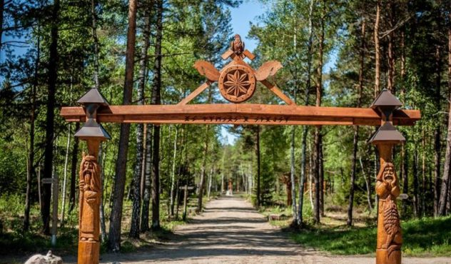
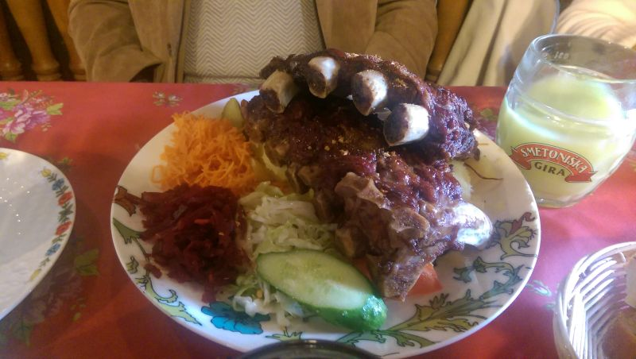
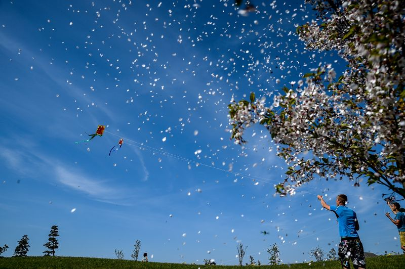
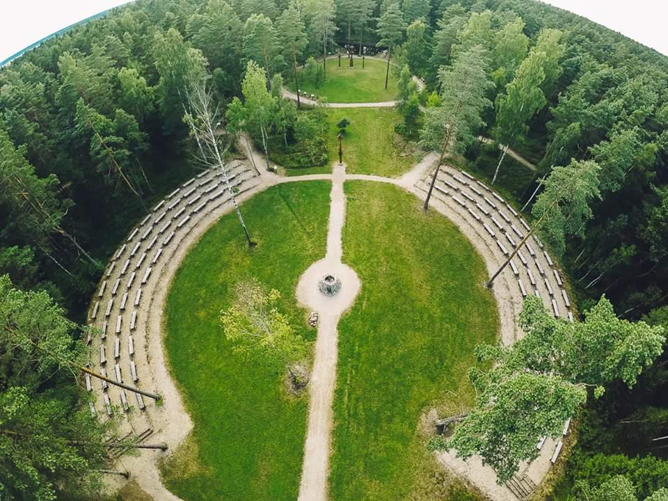
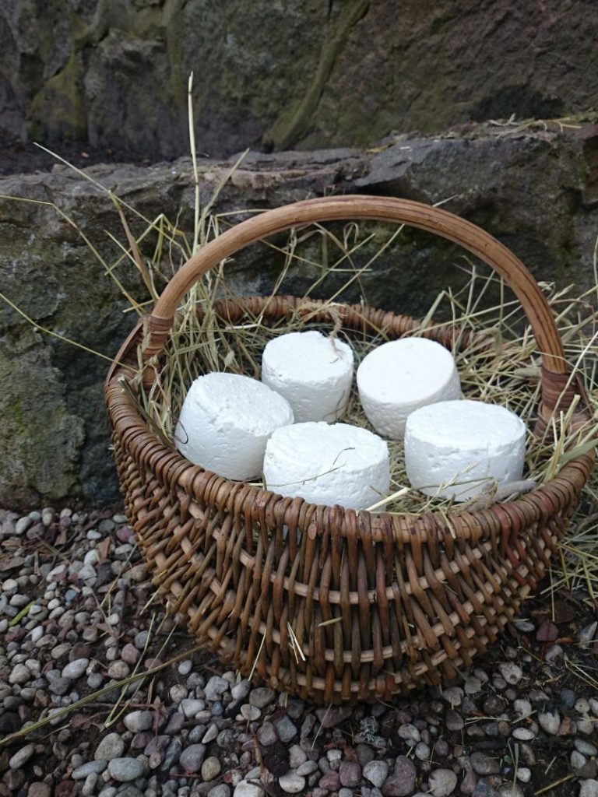

Maršrutai po Lietuvą: Žemaitija
Kelionės yra tiesiausias ir paprasčiausias būdas pajusti didelę laimę. Nesvarbu, ar skrisite niolika valandų lėktuvu į tolimiausią pasaulio kraštą, ar automobiliu išnaršysite Lietuvą, o gal išeisite į žygį pėsčiomis, – laimė lyg koks vitaminas kaupsis ir didės. Keliaudami daugiau judame, daugiau juokiamės, daugiau pamatome, daugiau kalbame ir, žinoma, – daugiau ragaujame!

Kavinė „Pakalnutė“, ir tik ji, sakė mums visi: žemaičiai, dzūkai, kauniečiai ir vilniečiai. Interjero subtilybių, alyvuogių ir pievagrybių nesitikėkite, bet šeimininkė sutiks ir pamaitins kaip seniai matytus gimines. Sodriai žalias kavinės pastatas yra Salantų centre, ir neįtikėtina, bet gali būti, kad staliuko teks palaukti eilėje! Antros tokios kavinės turbūt nėra, nes mažų (tikrai mažų…) kainų stebuklas čia suderintas su skaniu naminiu maistu ir didžiulėmis porcijomis! Kavinės top patiekalas – šonkauliukai. Ohoho, neišgriūkit pamatę – lėkštė didžiulė ir tie naminės mėsos šonkauliai, darniu kalneliu sudėlioti, šalia – šeimininkės darže augintos daržovės ir virtos bulvikės. Suvalgę metrą tų tikrai skaniausių pasaulio šonkaulių ir susimokėję jau kylame eiti, o šeimininkė į rieškučias beria saldainių. Tai ar daug tie du ar trys šimtai kilometrų, kai įspūdžių milijonas ir pilvas džiaugiasi?

Didžiausias japoniškas sodas Europoje. Unikalus 16 hektarų meistro Hajime Watanabe iš Japonijos kuriamas japoniškas sodas su tūkstančių bonsų kolekcija, akmenų sodu, sakuromis, tvenkiniais. Sodo kūrėjai viską papasakos ir aprodys, galėsite paragauti japoniškos žaliosios matcha arbatos ir pamaitinti laimę nešančius karpius. Darbėnuose už bažnyčios sukite Laukžemės kryptimi, po to jau matysite nuorodas.

Paslaptingame piramidės formos miške tarp Šventosios ir Darbėnų yra Baltų mitologijos parkas.
Čia „gyvena“ legendiniai senovės lietuvių garbinti dievai: Praamžius, Perkūnas, Žvaigždikis ir net Patrimpas, kuris už pavasarinį atgimimą atsakingas. Jei į parką iš viršaus pažiūrėtumėte, pažintiniai jo takai į Verpstės pavidalą susidėtų. O jei, gryname miško ore palakstę tarp mitologinių būtybių, neišalkote, užeikite ir į šalia esantį labirintą Laimės šulinio paieškoti.

Ekologinis ožkų ūkis „Bajorkaimio pievos“ – smalsuoliams, norintiems pamatyti, kaip daromi fermentiniai sūriai. Mažyliams, kurie galės straksėti su ožiukais, paglostyti avytę, žemaitukų veislės kumele Klumpe pajodinėti. Gurmanams, kad balandų pesto su sūriu ragaudami džiaugtųsi. Beje, šioje sodyboje 1987 m. režisierius Gytis Padegimas filmavo „Irkos tragediją“ (pagal Šatrijos Raganą).

Dar mano kolegei Ievai patiko Arūno ir Natalijos Normantų sūrių ūkis. Jie augina ožkas, avis, turi ančių, žąsų, vištų, gaidžių, povų, triušių, kačių, šūnų ir dar daug gyvūnijos. O gamina puikius fetos sūrius, halumį, puskiečius sūrius, O Arūnas mėgsta paekspermentuoti ir su tautinių gėrimų gamyba. Aplankykite juos būtinai, mums labai patiko.